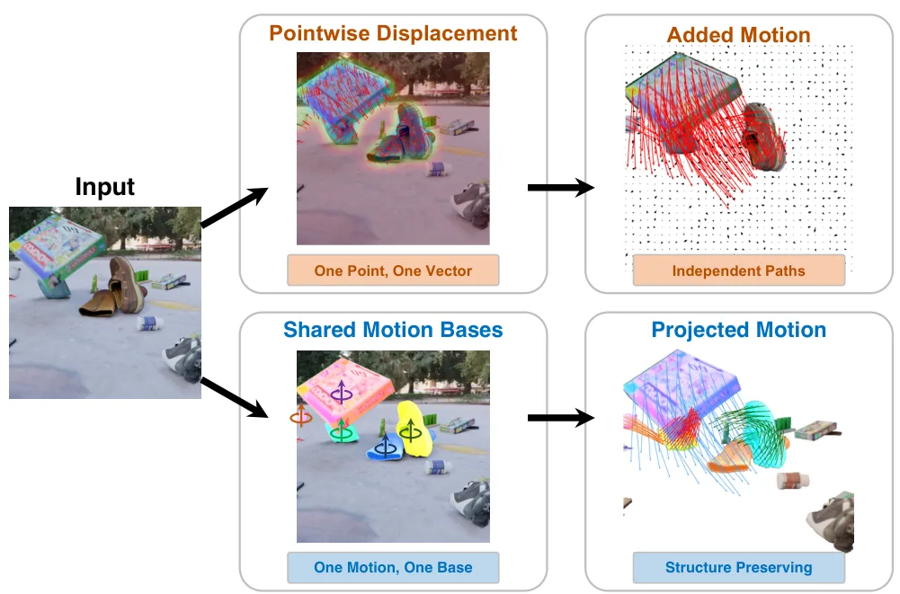
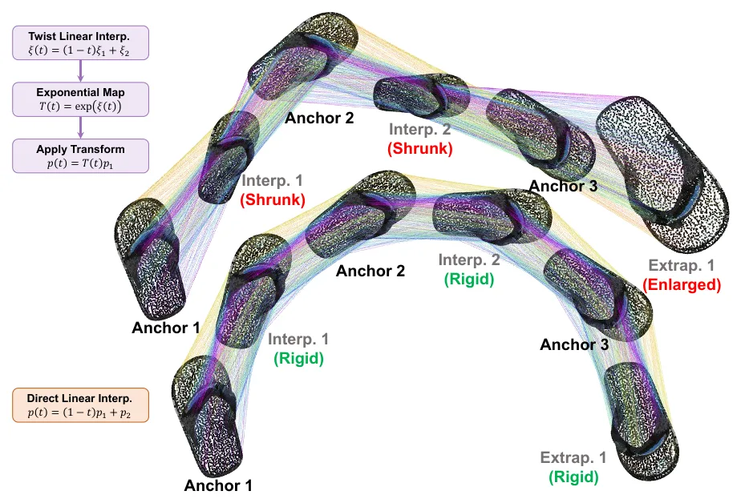
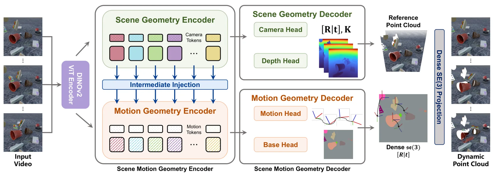
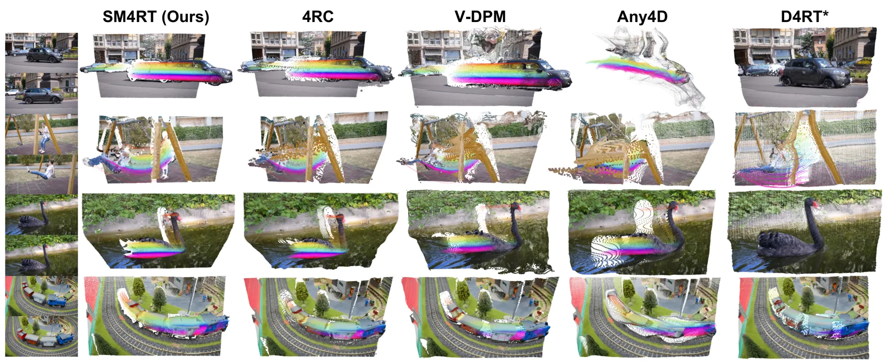
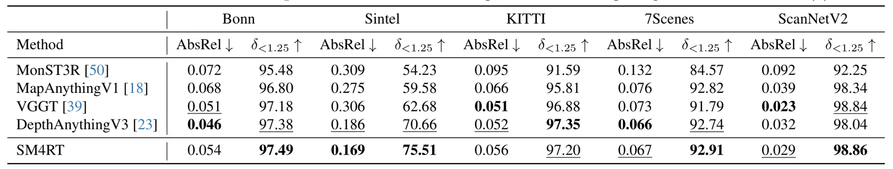
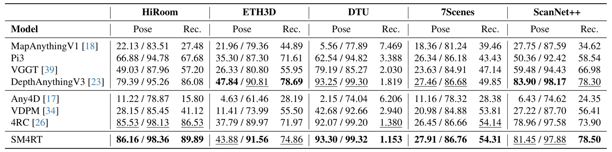
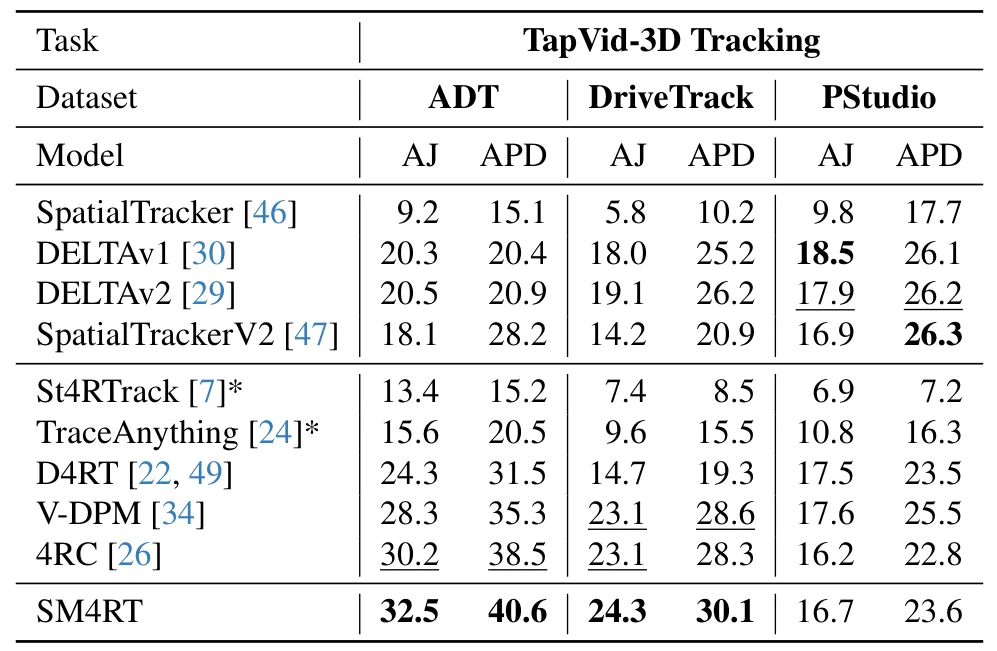
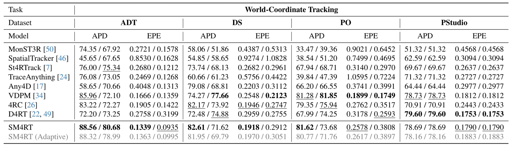

SM4RT：学习结构化运动几何的四维重建SM4RT: Learning Structured Motion Geometry for 4D Reconstruction
结构化 SE(3) motion basis 对动态 SLAM 和对象级建图有潜在价值，且代码公开；目前更偏前馈 4D reconstruction，摘要缺少量化结果、metric scale、非刚体适应性和在线能力说明。
一句话工作总结
用少量 SE(3) 运动基及时间共享的像素分配联合恢复三维几何、世界运动与对象级运动结构。
摘要
现有稀疏 tracking 或稠密 point-wise flow 往往把运动视为相互独立的点位移，忽略真实物体通常遵循共享的刚体运动。SM4RT 是用于端到端三维重建和结构化运动感知的 Structured Motion 4D Reconstruction Transformer。其 Structure-of-Motion 表示把场景运动分解为少量 motion bases，每个 basis 由一段以 6D twists 表达的 SE(3) 时间序列组成；稠密场景运动则通过跨时间共享的逐像素 assignment weights 从这些 bases 恢复，使同一物体上的点共享刚体运动轨迹。并行 motion geometry encoder 和 decoder 可从单目 RGB 视频在一次前向传播中联合推断三维几何、世界坐标运动及场景运动学结构。
Geometry Foundation Models (GFMs) have substantially advanced monocular 3D reconstruction, yet extending this capability to 4D dynamic understanding remains a fundamental challenge. Most existing motion perception methods (e.g., sparse tracking, dense point-wise flow) treat motion as independent point-wise displacements, ignoring the structured nature of physical motion. However, real-world objects usually obey rigid-body kinematics, and points thus usually move collectively, not in isolation. Motion itself possesses geometric structure: physical objects undergo a set of rigid-body transformations governed by SE(3), rather than unstructured point-wise displacements. Building on this insight, we propose SM4RT, a Structured Motion 4D Reconstruction Transformer for end-to-end 3D reconstruction and structured motion perception. SM4RT introduces Structure-of-Motion to represent scene dynamics, where scene motion is decomposed into a compact set of motion bases, each represented as a temporal sequence of 6D twists in SE(3). Dense scene motion is then recovered by sparse, time-shared per-pixel assignment weights over these bases, ensuring points on the same object share a common rigid-body motion trajectory. SM4RT introduces a parallel motion geometry encoder and decoder that jointly infer 3D geometry, world-coordinate motion, and scene kinematic structure in a single forward pass from monocular RGB video. SM4RT achieves strong motion reconstruction performance while preserving the geometric structure of scene motion.
中文解读摘录
- 作者：Shing Ho J. Lin, Wenzhao Zheng, Dong Zhuo, Yuqi Wu, Jie Zhou, Jiwen Lu
- 价值判断：把动态场景从彼此独立的 point-wise flow 提升为共享刚体运动结构，有望为 dynamic SLAM、场景流和对象级建图提供更紧凑且物理一致的先验。
- 技术要点：Structure-of-Motion 将运动分解为少量 motion bases，每个 basis 是一段由 6D twists 表示的 SE(3) 时间序列；稠密运动由跨时间共享的逐像素 assignment weights 组合恢复。并行 motion geometry encoder/decoder 从单目 RGB 视频一次前向联合预测三维几何、世界坐标运动和 scene kinematic structure。
- 结果边界：摘要只称 motion reconstruction 表现强，未给出量化指标。需核查 motion-base 数量选择、非刚体/铰接物体、遮挡与拓扑变化、camera/object motion 解耦、metric scale，以及是否可实时接入在线 SLAM。
- 链接：arXiv · PDF · 代码
图表/页面预览

{kind=link}

{kind=link}

{kind=link}

{kind=link}

{kind=link}

{kind=link}

{kind=link}

{kind=link}
